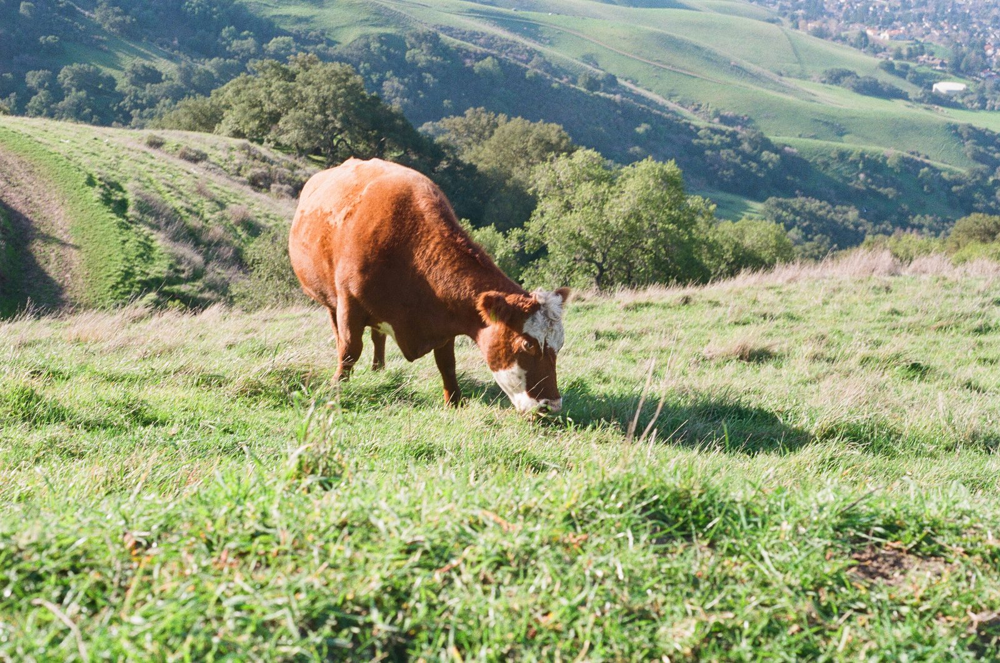
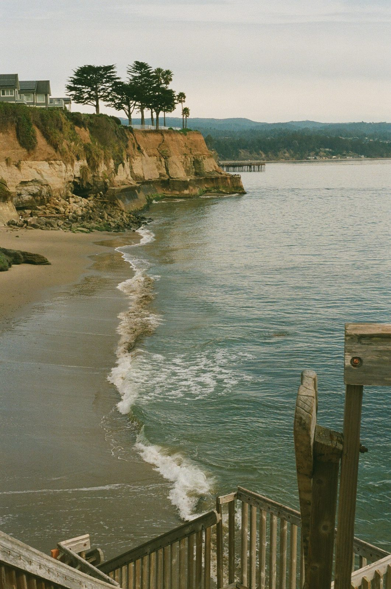
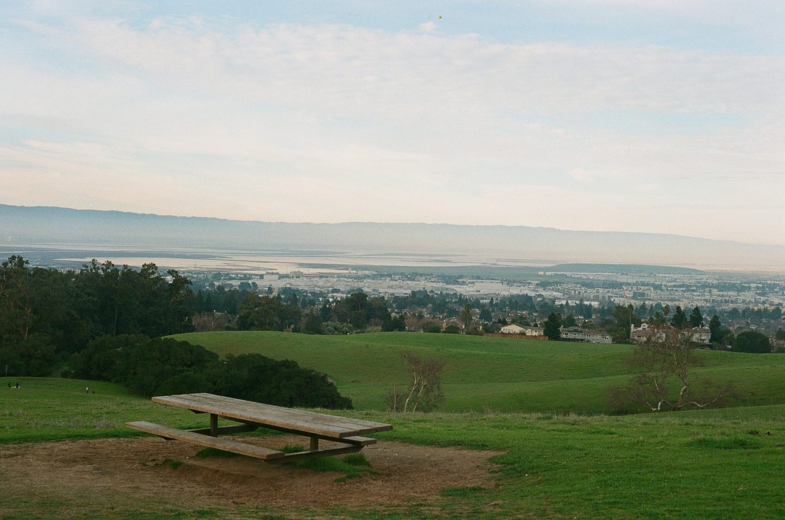
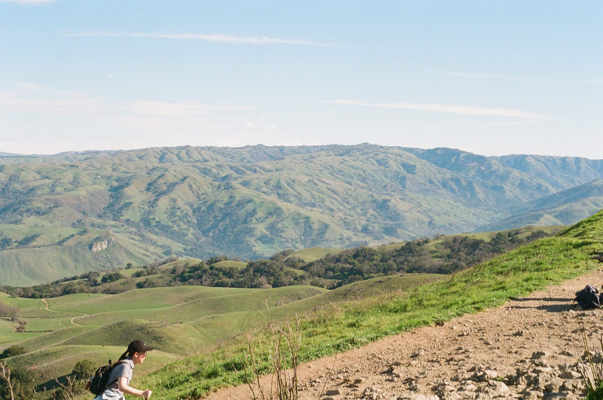
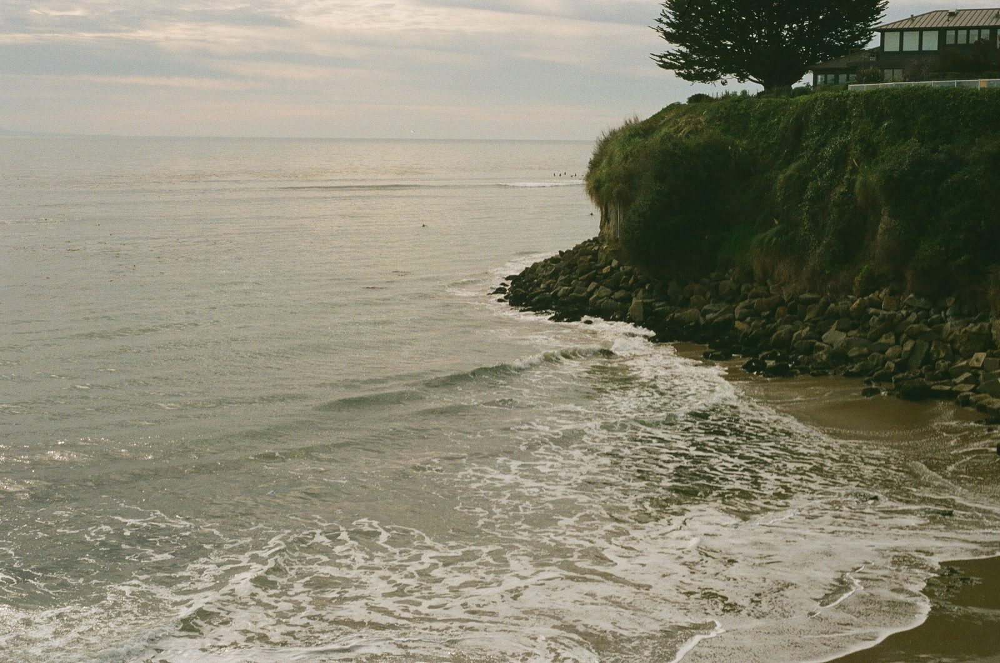
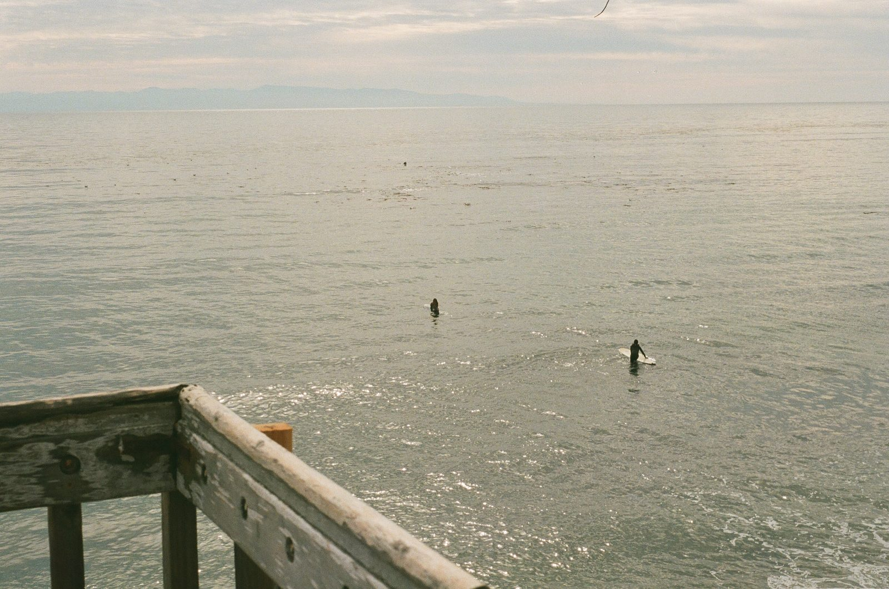

Roll 03 · 35mm · green season
CLOSE TO HOME
South Bay hills one week, the coast past Santa Cruz the next. No plans, just walks with a camera. You do not need a national park to find a frame worth keeping.





